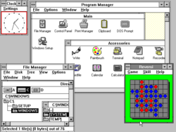
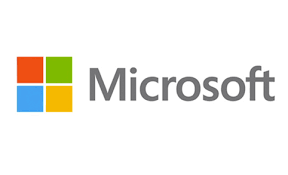

Microsoft Windows, commonly referred to as Windows, is a group of several proprietary graphical operating
system families, all of which are developed and marketed by Microsoft. Each family caters to a certain sector
of the computing industry. Active Microsoft Windows families include Windows NT and Windows IoT; these may
encompass subfamilies, (e.g. Windows Server or Windows Embedded Compact) (Windows CE). Defunct Microsoft
Windows families include Windows 9x, Windows Mobile, and Windows Phone.
Microsoft introduced an operating environment named Windows on November 20, 1985, as a graphical
operating system shell for MS-DOS in response to the growing interest in graphical user interfaces (GUIs)
.Microsoft Windows came to dominate the world's personal
computer (PC) market with over 90% market share, overtaking Mac OS, which had been introduced in 1984.
Apple came to see Windows as an unfair encroachment on their innovation in GUI development as implemented on products such as the Lisa and Macintosh (eventually settled in court in Microsoft's favor in 1993). On PCs, Windows is still the most popular
operating system in all countries.However, in 2014, Microsoft admitted losing the majority of the overall
operating system market to Android, because of the massive growth in sales of Android smartphones.
In 2014, the number of Windows devices sold was less than 25% that of Android devices sold. This comparison,
however, may not be fully relevant, as the two operating systems traditionally target different platforms.
Still, numbers for server use of Windows (that are comparable to competitors)
show one third market share, similar to that for end user use.
As of October 2020, the most recent version of Windows for PCs, tablets and embedded devices is Windows 10,
version 21H1. The most recent version for server computers is Windows Server, version 21H1. A specialized
version of Windows also runs on
the Xbox One and Xbox Series X/S video game consoles.
Microsoft, the developer of Windows, has registered several trademarks, each of which denotes a family of Windows operating systems that target a specific sector of the computing industry. As of 2014, the following Windows families were being actively developed:
Main articles: Windows 1.0, Windows 2.0, and Windows 2.1x
The history of Windows dates back to 1981 when Microsoft started work on a program called "Interface Manager".
It was announced in November 1983 (after the Apple Lisa, but before the Macintosh) under the name "Windows",
but Windows 1.0 was not released until November 1985. Windows 1.0 was to compete with Apple's operating system,
but achieved little popularity. Windows 1.0 is not a complete operating system; rather, it extends MS-DOS. The shell
of Windows 1.0 is a program known as the MS-DOS Executive. Components included Calculator, Calendar, Cardfile,
Clipboard Viewer, Clock, Control Panel, Notepad, Paint, Reversi, Terminal and Write. Windows 1.0 does not allow
overlapping windows. Instead all windows are tiled. Only modal dialog boxes may appear over other windows.
Microsoft sold as included Windows Development libraries with the C development environment, which included
numerous windows samples.
Windows 2.0 was released in December 1987, and was more popular than its predecessor. It features several
improvements to the user interface and memory management. Windows 2.03 changed the OS from tiled windows
to overlapping windows. The result of this change led to Apple Computer filing a suit against Microsoft alleging
infringement on Apple's copyrights. Windows 2.0 also introduced more sophisticated keyboard shortcuts and
could make use of expanded memory.
Windows 2.1 was released in two different versions: Windows/286 and Windows/386. Windows/386 uses the virtual 8086
mode of the Intel 80386 to multitask several DOS programs and the paged memory model to emulate expanded memory
using available extended memory. Windows/286, in spite of its name, runs on both Intel 8086 and Intel 80286
processors. It runs in real mode but can make use of the high memory area.
In addition to full Windows-packages, there were runtime-only versions that shipped with early Windows software
from third parties and made it possible to run their Windows software on MS-DOS and without the full Windows feature set.
The early versions of Windows are often thought of as graphical shells, mostly because they ran on top of MS-DOS
and use it for file system services. However, even the earliest Windows versions already assumed many typical
operating system functions; notably, having their own executable file format and providing their own device
drivers (timer, graphics, printer, mouse, keyboard and sound). Unlike MS-DOS, Windows allowed users to execute
multiple graphical applications at the same time, through cooperative multitasking. Windows implemented an
elaborate, segment-based, software virtual memory scheme, which allows it to run applications larger than
available memory: code segments and resources are swapped in and thrown away when memory became scarce; data
segments moved in memory when a given application had relinquished processor control.
Windows 3.0, released in 1990, improved the design, mostly because of virtual memory and loadable virtual
device drivers (VxDs) that allow Windows to share arbitrary devices between multi-tasked DOS applications.
Windows 3.0 applications can run in protected mode, which gives them access to several megabytes
of memory without the obligation to participate in the software virtual memory scheme. They run inside the same address
space, where the segmented memory provides a degree of protection. Windows 3.0 also featured improvements to the user
interface. Microsoft rewrote critical operations from C into assembly. Windows 3.0 is the first Microsoft Windows
version to achieve broad commercial success, selling 2 million copies in the first six months.
Windows 3.1, made generally available on March 1, 1992, featured a facelift. In August 1993, Windows for Workgroups,
a special version with integrated peer-to-peer networking features and a version number of 3.11, was released.
It was sold along with Windows 3.1. Support for Windows 3.1 ended on December 31, 2001.
Windows 3.2, released 1994, is an updated version of the Chinese version of Windows 3.1. The update was limited
to this language version, as it fixed only issues related to the complex writing system of the Chinese language.
Windows 3.2 was generally sold by computer manufacturers with a ten-disk version of MS-DOS that also had Simplified
Chinese characters in basic output and some translated utilities. 
The next major consumer-oriented release of Windows, Windows 95, was released on August 24, 1995. While still remaining MS-DOS-based,
Windows 95 introduced support for native 32-bit applications, plug and play hardware, preemptive multitasking, long file names of up
to 255 characters, and provided increased stability over its predecessors. Windows 95 also introduced a redesigned, object oriented
user interface, replacing the previous Program Manager with the Start menu, taskbar, and Windows Explorer shell. Windows 95 was a major
commercial success for Microsoft; Ina Fried of CNET remarked that "by the time Windows 95 was finally ushered off the market in 2001,
it had become a fixture on computer desktops around the world." Microsoft published four OEM Service Releases (OSR) of Windows 95,
each of which was roughly equivalent to a service pack. The first OSR of Windows 95 was also the first version of Windows to be bundled
with Microsoft's web browser, Internet Explorer.Mainstream support for Windows 95 ended on December 31, 2000, and extended support
for Windows 95 ended on December 31, 2001.
Windows 95 was followed up with the release of Windows 98 on June 25, 1998, which introduced the Windows Driver Model, support for USB
composite devices, support for ACPI, hibernation, and support for multi-monitor configurations. Windows 98 also included integration
with Internet Explorer 4 through Active Desktop and other aspects of the Windows Desktop Update (a series of enhancements to the Explorer
shell which were also made available for Windows 95). In May 1999, Microsoft released Windows 98 Second Edition, an updated version of
Windows 98. Windows 98 SE added Internet Explorer 5.0 and Windows Media Player 6.2 amongst other upgrades. Mainstream support for Windows
ended on June 30, 2002, and extended support for Windows 98 ended on July 11, 2006.
On September 14, 2000, Microsoft released Windows Me (Millennium Edition), the last DOS-based version of Windows. Windows Me incorporated
visual interface enhancements from its Windows NT-based counterpart Windows 2000, had faster boot times than previous versions
(which however, required the removal of the ability to access a real mode DOS environment, removing compatibility with some older programs)
, expanded multimedia functionality (including Windows Media Player 7, Windows Movie Maker, and the Windows Image Acquisition framework
for retrieving images from scanners and digital cameras), additional system utilities such as System File Protection and System Restore,
and updated home networking tools. However, Windows Me was faced with criticism for its speed and instability, along with hardware
compatibility issues and its removal of real mode DOS support. PC World considered Windows Me to be one of the worst operating systems
Microsoft had ever released, and the 4th worst tech product of all time.
In November 1988, a new development team within Microsoft (which included former Digital Equipment Corporation developers Dave
Cutler and Mark Lucovsky) began work on a revamped version of IBM and Microsoft's OS/2 operating system known as "NT OS/2". NT OS/2
was intended to be a secure, multi-user operating system with POSIX compatibility and a modular, portable kernel with preemptive
multitasking and support for multiple processor architectures. However, following the successful release of Windows 3.0, the NT
development team decided to rework the project to use an extended 32-bit port of the Windows API known as Win32 instead of those
of OS/2. Win32 maintained a similar structure to the Windows APIs (allowing existing Windows applications to easily be ported to
the platform), but also supported the capabilities of the existing NT kernel. Following its approval by Microsoft's staff, development
continued on what was now Windows NT, the first 32-bit version of Windows. However, IBM objected to the changes, and ultimately
continued OS/2 development on its own.
Windows NT was the first Windows operating system based on a hybrid kernel. The hybrid kernel was designed as a modified microkernel,
influenced by the Mach microkernel developed by Richard Rashid at Carnegie Mellon University, but without meeting all of the criteria
of a pure microkernel.
The first release of the resulting operating system, Windows NT 3.1 (named to associate it with Windows 3.1) was released in July 1993,
with versions for desktop workstations and servers. Windows NT 3.5 was released in September 1994, focusing on performance
improvements and support for Novell's NetWare, and was followed up by Windows NT 3.51 in May 1995, which included additional
improvements and support for the PowerPC architecture. Windows NT 4.0 was released in June 1996, introducing the redesigned interface
of Windows 95 to the NT series. On February 17, 2000, Microsoft released Windows 2000, a successor to NT 4.0. The Windows NT name
was dropped at this point in order to put a greater focus on the Windows brand
The next major version of Windows NT, Windows XP, was released on October 25, 2001. The introduction of Windows XP aimed to unify
the consumer-oriented Windows 9x series with the architecture introduced by Windows NT, a change which Microsoft promised would
provide better performance over its DOS-based predecessors. Windows XP would also introduce a redesigned user interface (including
an updated Start menu and a "task-oriented" Windows Explorer), streamlined multimedia and networking features, Internet Explorer
6, integration with Microsoft's .NET Passport services, modes to help provide compatibility with software designed for previous
versions of Windows, and Remote Assistance functionality.
At retail, Windows XP was now marketed in two main editions: the "Home" edition was targeted towards consumers, while the
"Professional" edition was targeted towards business environments and power users, and included additional security and networking
features. Home and Professional were later accompanied by the "Media Center" edition (designed for home theater PCs, with an emphasis
on support for DVD playback, TV tuner cards, DVR functionality, and remote controls), and the "Tablet PC" edition (designed for
mobile devices meeting its specifications for a tablet computer, with support for stylus pen input and additional pen-enabled
applications). Mainstream support for Windows XP ended on April 14, 2009. Extended support ended on April 8, 2014.
After Windows 2000, Microsoft also changed its release schedules for server operating systems; the server counterpart of Windows XP,
Windows Server 2003, was released in April 2003. It was followed in December 2005, by Windows Server 2003 R2.
After a lengthy development process, Windows Vista was released on November 30, 2006, for volume licensing and January 30, 2007, for consumers. It contained a number of new features, from a redesigned shell and user interface to significant technical changes, with a particular focus on security features. It was available in a number of different editions, and has been subject to some criticism, such as drop of performance, longer boot time, criticism of new UAC, and stricter license agreement. Vista's server counterpart, Windows Server 2008 was released in early 2008.
On July 22, 2009, Windows 7 and Windows Server 2008 R2 were released as RTM (release to manufacturing) while the former was released to the public 3 months later on October 22, 2009. Unlike its predecessor, Windows Vista, which introduced a large number of new features, Windows 7 was intended to be a more focused, incremental upgrade to the Windows line, with the goal of being compatible with applications and hardware with which Windows Vista was already compatible. Windows 7 has multi-touch support, a redesigned Windows shell with an updated taskbar, a home networking system called HomeGroup, and performance improvements.
Windows 8, the successor to Windows 7, was released generally on October 26, 2012. A number of significant
changes were made on Windows 8, including the introduction of a user interface based around Microsoft's Metro
design language with optimizations for touch-based devices such as tablets and all-in-one PCs. These changes include
the Start screen, which uses large tiles that are more convenient for touch interactions and allow for the display
of continually updated information, and a new class of apps which are designed primarily for use on touch-based devices.
The new Windows version required a minimum resolution of 1024×768 pixels, effectively making it unfit for netbooks
with 800×600-pixel screens.
Other changes include increased integration with cloud services and other online platforms (such as social networks
and Microsoft's own OneDrive (formerly SkyDrive) and Xbox Live services), the Windows Store service for software
distribution, and a new variant known as Windows RT for use on devices that utilize the ARM architecture. An update
to Windows 8, called Windows 8.1, was released on October 17, 2013, and includes features such as new live tile
sizes, deeper OneDrive integration, and many other revisions. Windows 8 and Windows 8.1 have been subject to some
criticism, such as removal of the Start menu.
On September 30, 2014, Microsoft announced Windows 10 as the successor to Windows 8.1. It was released on July 29,
2015, and addresses shortcomings in the user interface first introduced with Windows 8. Changes on PC include the
return of the Start Menu, a virtual desktop system, and the ability to run Windows Store apps within windows on the
desktop rather than in full-screen mode. Windows 10 is said to be available to update from qualified Windows 7
with SP1, Windows 8.1 and Windows Phone 8.1 devices from the Get Windows 10 Application (for Windows 7, Windows 8.1)
or Windows Update (Windows 7).
In February 2017, Microsoft announced the migration of its Windows source code repository from Perforce to Git.
This migration involved 3.5 million separate files in a 300 gigabyte repository. By May 2017, 90 percent of its
engineering team was using Git, in about 8500 commits and 1760 Windows builds per day.
Microsoft Windows  | |||||||
|---|---|---|---|---|---|---|---|
| Windows Version | Windows 98 | Windows xp | Windows Vista | Windows 7 | Windows 8 | Windows 8.1 | Windows 10 |
| Release Date | 1998 | 2001 | 2006 | 2009 | 2012 | 2013 | 2015 |